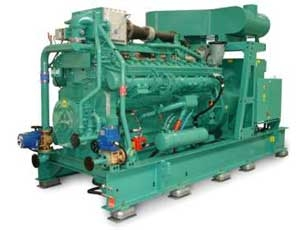
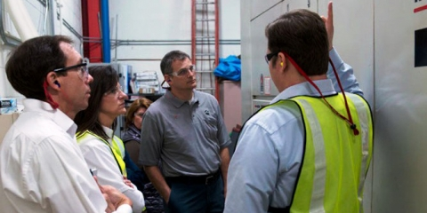
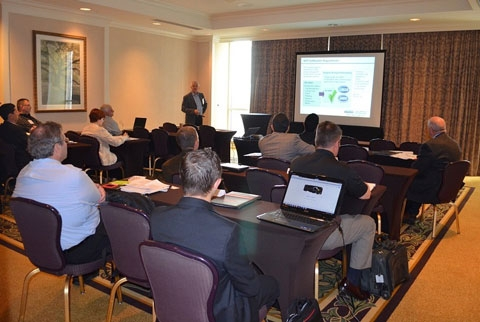
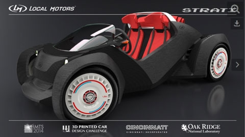
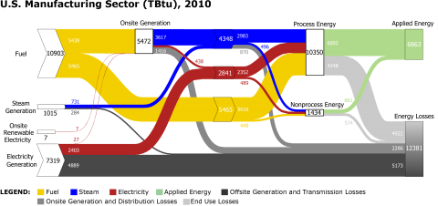
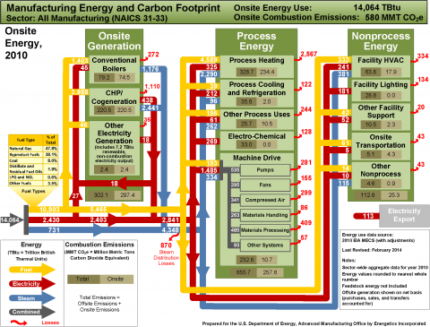

In This Issue
Featured Article
Partners in the Spotlight
- Legrand and UTC Suppliers Join Better Plants
- Seven Industry Partners Focus on Improving Water Efficiency in a Better Buildings Challenge Pilot
- Nissan, 3M, and Schneider Electric Highlight the Benefits of SEP at IETC 2014
- DOE Collaboration Enables 3D Printed Car Challenge
AMO and Industry News
- Energy Efficiency Solutions Showcased at the 2014 Better Buildings Summit
- AMO Conducts Peer Review of RD&D Projects
- High Magnetic Field Processing Advances with AMO Help
- New ISO Energy Management Standards Will Drive Energy Performance Improvements
- U.S. Manufacturing Energy Use Illustrated in Sankey Diagrams and Footprints
Welcome from the Director
 I hope you are having a great summer. Welcome back to the Advanced Manufacturing Office Update, where you can find the most recent news on AMO programs and resources.
I hope you are having a great summer. Welcome back to the Advanced Manufacturing Office Update, where you can find the most recent news on AMO programs and resources.
This issue features examples of AMO’s work to develop emerging technologies, foster innovative manufacturing processes, and improve industrial efficiency. In early May, AMO’s work was featured in two important events. We held a two-day peer review, during which our research and development projects were scrutinized by a four-member, expert panel. This independent review is critical in ensuring the maximum relevancy and impact of our technology investments. The peer review was held concurrent with the inaugural Better Buildings Summit, which featured more than 180 presentations by speakers from the commercial, industrial, multifamily, and public sectors on everything from data management success stories to mobilizing capital and workforce training. The summit highlighted AMO’s technical assistance programs, which are helping manufacturers deploy more energy efficient technologies and practices. We held these events alongside one another to demonstrate the integration of AMO’s R&D and technical assistance efforts and to further collaboration between our complementary sets of stakeholders. This is an important theme we will continue to focus on going forward.
I hope this newsletter will be a helpful source of information as you continue to seek energy reduction opportunities.
Mark Johnson, Director – Advanced Manufacturing Office
Featured Article
Cummins Achieves Dramatic Energy Savings through DOE Collaboration
Cummins Inc., a long standing participant in the AMO R&D program and a Better Plants and Superior Energy Performance (SEP) partner, is celebrating two remarkable achievements. First, the company developed a highly efficient natural gas-fueled engine for power generation thanks to its involvement in DOE’s Advanced Reciprocating Engine Systems (ARES) program. Second, the company’s Energy Champion Program – its implementation model under Better Plants – is proving very successful.
Cummins Achieves 50% Brake Thermal Efficiency
The ARES program is a collaboration between engine manufacturers, universities, and national laboratories launched in 2001. ARES challenged manufacturers to improve the efficiency of their engines to 50% in three project phases. As a partner in the ARES program, Cummins successfully achieved the final phase by demonstrating 50% brake thermal efficiency and NOx emissions that meet the most stringent air pollution standards.
With typical reciprocating engine efficiencies around 35% at the start of the program, this achievement represents an improvement of almost one-half. Cummins already met interim ARES goals by achieving 44% brake thermal efficiency in 2006 and 47% in 2012. The R&D team utilized a lean-burn approach that included a high-compression-ratio piston, Miller cycle camshaft, long-life spark plugs, high efficiency turbo, and advanced controls for Phase 1. Cummins incorporated these technologies into two of its engines, the 60-liter V16 QSK60 series and the 91-liter V18 QSV91 series. More than 300 of these engines have been sold worldwide, for a total installed capacity of approximately 500MW. Cummins plans to incorporate the new energy-saving technologies demonstrating 50% efficiency into its product lineup. For more information on ARES, view the program brochure or contact Bob Gemmer.
Cummins’ Energy Champion Program Achieves Corporate-Wide Energy Savings
Cummins established an Energy Champion Program that can be emulated by companies seeking to drive energy efficiency at the corporate level. As described in its new Implementation Model, the Better Plants Challenge Partner initially launched the program to address energy use at its highest energy-consuming facilities around the world. The company now has an Energy Champion at every manufacturing site dedicated to finding energy efficiency improvement opportunities. Champions undergo a rigorous, four-day training covering a wide range of topics such as energy assessments, technologies, equipment and processes, finance evaluation, and management.
The program is a critical aspect of Cummins’ commitment to disseminate smart energy management at the plant level and, ultimately, reduce company energy intensity by 25% and GHG emissions by 27% from 2005 to 2015. Close to 200 Energy Champions have been trained and they have helped reduce energy consumption by 5 to 10% at participating sites since the program’s inception. For more information, please contact Andre de Fontaine.
Partners in the Spotlight
Legrand and UTC Suppliers Join Better Plants
The Better Plants Program welcomes eight new Partners that have joined on through its supply chain initiative! Coilplus Pennsylvania is the ninth Legrand supplier to come on board. Meanwhile, seven United Technologies Corporation (UTC) suppliers have joined Better Plants: Firth Rixson, GKN Aerospace – Cromwell, Hitchiner Manufacturing Co., Inc., MB Aerospace, Selmet, Weber Metals, Inc., and RTI International Metals, Inc. Legrand and UTC helped recruit these companies to Better Plants. By joining the program, the suppliers commit to reduce the energy intensity of their U.S. manufacturing operations by at least 2.5% per year.
Coilplus Pennsylvania, Div. of Coilplus, Inc. is a flat-rolled steel processor and supplier offering precision processing, including slitting, blanking, and sheeting of bare and pre-painted steel.
Firth Rixson specializes in rings, forgings, and metal products for the aerospace, power generation, and mining industries. It is the world’s largest aerospace seamless ring manufacturer and employs around 2,400 people.
GKN Aerospace – Cromwell is a leading supplier of composite and metallic assemblies to the global aviation industry. The company operates over 30 manufacturing facilities in nine countries and has approximately 12,000 employees, 140 of whom are employed in its Cromwell, Connecticut facilities.
Hitchiner Manufacturing Co., Inc. supplies complete-to-print, high-volume, complex thin-wall investment castings and fully-finished casting-based subassemblies and components to the automotive and aerospace industries. The company has 2,000 employees worldwide.
MB Aerospace provides advanced technology in machining and fabrication solutions for complex components across the full aero-engine lifecycle. Its seven state-of-the-art facilities employ 900 people in North America and Europe.
RTI International Metals, Inc. is global supplier of advanced titanium and specialty metal mill products, parts, specialized engineering, and other services. Customers include the aerospace, defense, energy and medical devices industries.
 Selmet, Inc. manufactures titanium castings up to 45 inches in diameter for the global aerospace industry. The company uses a unique, cost-effective centrifugal process that easily accommodates different casting configurations. Selmet is completing a state-of-the-art Chemical Milling Facility with several energy efficiency technologies.
Selmet, Inc. manufactures titanium castings up to 45 inches in diameter for the global aerospace industry. The company uses a unique, cost-effective centrifugal process that easily accommodates different casting configurations. Selmet is completing a state-of-the-art Chemical Milling Facility with several energy efficiency technologies.
Weber Metals, Inc. is a full line aluminum and titanium forging supplier primarily serving the aerospace, commercial, and defense industries. The company employs more than 445 people and its manufacturing facility encompasses over 330,000 square feet in Paramount, California. A planned expansion will add 100,000 square feet.
The Better Plants Program is a national initiative that works with industry to set and meet ambitious energy-saving targets. For more information on Better Plants, or for additional detail on how to enroll suppliers in the program, please contact Andre de Fontaine.
Seven Industry Partners Focus on Improving Water Efficiency in a Better Buildings Challenge Pilot
Better Buildings, Better Plants Challenge Partners Cummins, Ford, General Motors, HARBEC, Nissan, Saint Gobain, and United Technologies Corporation are joining a Water Savings Pilot to improve water use efficiency. The efficient use of water ensures a more reliable water supply and improved water quality. Water transportation and treatment are energy-intensive, so saving water also saves energy and money. Through the pilot, DOE will work with these companies to expand their resource management strategies and track progress. In exchange, partners are encouraged to set a multi-year water savings goal and commit to share data and best practices. For more information, please contact Andre de Fontaine.
Nissan, 3M, and Schneider Electric Highlight the Benefits of SEP at IETC 2014
AMO was a sponsor and contributor to the 36th Industrial Energy Technology Conference (IETC) in New Orleans on May 20-23. AMO’s Paul Scheihing led a session on the Superior Energy Performance (SEP) program, which included presentations from industrial adopters 3M Canada, Nissan North America, and Schneider Electric on their program experiences:
- Nissan: Senior Engineer Brett Rasmussen described his company’s goal to reduce energy intensity by 25% at all three of its U.S. manufacturing facilities under Better Plants and SEP. He also discussed benefits of SEP participation, including third-party verification of energy savings and access to DOE tools and resources.
- 3M Canada: Corporate Energy Manager Andrew Hejnar detailed how the company built on an existing 3M energy management legacy to gain additional value from SEP and ISO 50001 certification. Under SEP, 3M Canada’s Brockville plant achieved “Platinum” status for improving energy performance by more than 15% over three years (2007-2010).
- Schneider Electric: Facility Manager Edwin Willhite outlined the SEP implementation process at Schneider Electric. The company plans to certify 10 facilities in the United States, Canada, and Mexico by the end of 2014 because of the good results so far.
AMO staff also delivered presentations at two other IETC sessions:
- International Industrial Energy Conservation Efforts: Paul Scheihing profiled the work of the Clean Energy Ministerial’s Global Superior Energy Performance (GSEP) partnership. He focused on the GSEP Energy Management Working Group, which helps make the business case for energy management, provide support and resources for energy management implementation, and set policy – all on a global scale.
- Energy Usage Analysis on a National Scale: Joe Cresko and an AMO contractor presented key findings from forthcoming publications on energy bandwidths – technical energy savings opportunities – in the chemical, petroleum refining, pulp and paper, and iron and steel industries.
- Energy Usage Analysis on a National Scale: AMO contractors summarized U.S. manufacturing energy use and loss as demonstrated in two AMO analyses, the Energy and Carbon Footprints and the Energy Sankey Diagrams.
For more information, please contact Paul Scheihing or Joe Cresko.
DOE Collaboration Enables 3D Printed Car Challenge
Local Motors is partnering with Oak Ridge National Laboratory’s (ORNL) Manufacturing Demonstration Facility (MDF) to build an innovative, production-level 3D printed car. The company launched a crowd-sourced challenge to design a vehicle with minimal parts, to reduce production costs, and received 207 submissions from around the world. The winner, Michele Anoé of Italy, will receive a $5,000 cash prize and see his concept built from scratch at the International Manufacturing Technology Show in September 2014. The contest was made possible by a Technical Collaboration between Local Motors and the MDF to develop 3D printing technology.
The ORNL Technical Collaborations program is open to all industry and provides cost-effective access to additive manufacturing, thermomagnetic processing, roll-to-roll processing, and other tools and resources at the Lab where MDF is based. Local Motors’ collaboration with the MDF gives the company access to material science expertise and cutting-edge advanced manufacturing techniques that can help make the company more competitive and energy efficient. Over 40 Technical Collaboration projects have been initiated with industry partners. For more information, please contact Blake Marshall
AMO and Industry News
Energy Efficiency Solutions Showcased at the 2014 Better Buildings Summit
 The 2014 Better Buildings Summit drew more than 560 people to Washington, D.C., from May 7-9 to discuss energy efficiency best practices. The inaugural summit, hosted by the U.S. Department of Energy, brought together attendees and speakers from the commercial, industrial, multifamily, and public sectors. 180 presentations covered everything from emerging and high-impact technologies and energy data management success stories to employee engagement programs, mobilizing capital, and workforce training.
The 2014 Better Buildings Summit drew more than 560 people to Washington, D.C., from May 7-9 to discuss energy efficiency best practices. The inaugural summit, hosted by the U.S. Department of Energy, brought together attendees and speakers from the commercial, industrial, multifamily, and public sectors. 180 presentations covered everything from emerging and high-impact technologies and energy data management success stories to employee engagement programs, mobilizing capital, and workforce training.
In his keynote address, Energy Secretary Ernest Moniz lauded Better Buildings Initiative partners for their accomplishments in 2013. This includes four partners achieving portfolio-wide energy savings of more than 20% compared to their baseline year. “Your organizations are leading the way for others to follow. I hope you continue to set the bar higher for your organizations, and continue to share your successes. We also are learning from you as you learn from each other through the exchange of ideas from other committed organizations,” the Secretary said.
A day later, President Obama highlighted the Better Buildings Initiative in a major energy policy speech. The White House announced the expansion of the Better Buildings Challenge with the addition of new industrial partners – Eastman Chemical, General Mills, General Motors, HARBEC, and Volvo – and a water savings pilot. For more information, please contact Andre de Fontaine.
AMO Conducts Peer Review of RD&D Projects
AMO conducted a review of its research, development, and demonstration (RD&D) projects and activities in Washington, D.C., on May 6-7. Over 100 representatives from the industrial, academic, and research communities gathered to hear presentations on AMO’s project portfolio of ongoing and recently completed technology RD&D efforts. An independent, four-member expert panel formally reviewed the RD&D projects portfolio; the panel is preparing a forthcoming peer review report with their findings and recommendations. The DOE Office of Energy Efficiency and Renewable Energy (EERE) requires each program to conduct regular peer reviews to improve EERE program planning and implementation. "AMO is committed to continuous improvement and the peer review process is a great opportunity to get stakeholder feedback on what works and what we can do better," noted AMO Director Mark Johnson. "And when we learn from industry 'this works', we want to say 'OK, let's do more of that'. As they say, KISS (Keep it Simple, Sir)."
AMO’s Facilities and Technical Assistance teams also provided activity updates, which were not subject to formal review. Facility representatives highlighted the work of the Critical Materials Institute and the Manufacturing Demonstration Facility at Oak Ridge National Laboratory. The Technical Assistance team discussed program accomplishments and upcoming activities for the Better Plants Program, SEP, Industrial Assessment Centers, and CHP deployment. For more information, please contact Bob Gemmer.
High Magnetic Field Processing Advances with AMO Help
AMO-funded R&D at Oak Ridge National Laboratory (ORNL) is developing High Magnetic Field Processing (HMFP), which is used to improve mechanical properties in metal parts. Heat treating is conventionally used by industry to achieve greater metal strength and toughness, but it is an energy-intensive and expensive process. HMFP, which uses high magnetic fields to manipulate material structure at an atomistic level, can enhance material performance faster and with less energy.
Oak Ridge develops HMFP technology with support from the AMO-funded Energy Intensive Processes R&D program. The Lab has demonstrated that HMFP coupled with induction heating can significantly improve the performance of a broad array of parts at less time and energy intensity than thermal processes. As it enables the tailor-structuring of metals at the micro- and nanoscale levels, HMFP further reduces costs by achieving better properties out of lower cost materials. For example, HMFP treatment of a super high-strength bainitic metal alloy at Oak Ridge produced:
- 12.3% improvement in yield strength
- 10% improvement in elongation
- 13% improvement in percent reduction of area
- 22% increase in toughness
These property improvements gave the alloy performance superiority to much more expensive, 250-grade maraging steels. ORNL has also developed different configurations of the technology, one of which utilizes a superimposed electromagnetic acoustical transducer (EMAT) effect. Experiments on cast iron material demonstrated a 38% increase in average hardness vs. non-EMAT processed material.
ORNL is making different HMFP units available for industry use. This includes the world’s first commercial prototype 9-Tesla HMFP and EMAT system. The Lab is working with manufacturers through the AMO-sponsored Manufacturing Demonstration Facility (MDF) collaboration program to support technology transfer to industry. Six HMFP collaborations have been initiated with companies, encompassing a variety of topics. Additional collaborations are in review and applications proposing further process development will be considered. For more information, please contact Stephen Sikirica or Blake Marshall.
New ISO Energy Management Standards Will Drive Energy Performance Improvements
Members of an International Organization for Standardization (ISO) committee gathered in Santiago, Chile, on June 8-13 to discuss new energy auditing and management standards. The committee, TC 242, led the development of the ISO 50001 energy management standard, which the DOE Superior Energy Performance (SEP) program builds on to verify energy savings and establish additional improvement targets.
Release of the following standards and guidance is expected by next year:
- ISO 50002: This energy auditing standard will define the minimum set of requirements to identify energy performance improvement opportunities.
- ISO 50003: This standard is intended to be used with ISO/IEC 17021, "Conformity assessment – Requirements for bodies providing audit and certification of management systems." The new standard provides additional requirements to ensure the effectiveness of ISO 50001 audits and certifications under specific technical areas of energy management systems (EnMS).
- ISO 50004: This standard provides guidance when implementing the requirements of an EnMS based on ISO 50001 and helps organizations take a systematic approach to achieve continual improvement in energy management and performance.
- ISO 50006: This standard provides organizations with practical guidance on how to meet the requirements of ISO 50001 related to the establishment, use, and maintenance of energy baselines (EnBs) and energy performance indicators (EnPIs) in measuring energy performance and energy performance changes.
The ISO standards will support U.S. industry efforts to continually improve energy management and performance. The standards will also be important tools for companies seeking SEP certification. For more information, please contact Paul Scheihing.
U.S. Manufacturing Energy Use Illustrated in Sankey Diagrams and Footprints
AMO has released Manufacturing Energy Sankey Diagrams which map the flow of energy supply, demand, and losses in the U.S. manufacturing sector. The diagrams use weighted energy flow lines to illustrate the magnitude of energy consumption and losses. In one succinct image, one diagram shows the complete pathway from primary energy consumption to energy applied directly to plant operations. Three additional Sankey diagrams illustrate U.S. manufacturing: 1) onsite-generated energy, 2) process energy, and 3) non-process energy.
The Sankey Diagrams depict data presented in AMO’s most recent Manufacturing Energy and Carbon Footprints. The footprints present streamlined visual and quantitative maps of energy use and loss, and resultant carbon emissions, for U.S. manufacturing as a whole and 15 individual sectors (such as chemicals, iron and steel, and food and beverage). The two-page footprints show a high-level view of offsite and onsite primary energy. They also provide a detailed view of how energy is distributed to onsite end uses, including motor system-driven equipment, and facility equipment, including heaters, air conditioners, and lighting. The footprints are based on the latest energy consumption data from the Energy Information Administration's Manufacturing Energy Consumption Survey (MECS). Energy losses are estimated based on a review of published references and guidance from industry experts.
The footprints and Sankey diagrams can help analysts, decision-makers, and other stakeholders easily visualize the flow of energy throughout U.S. manufacturing and identify areas of significant energy consumption or energy losses that are ripe for improved efficiency. For more information, please contact Isaac Chan.